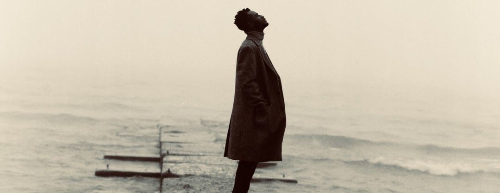

Akwaaba /ɑ́kʷàːbá/ ‘Welcome’
Hello! I am Emmanuel Appiah Gyasi
/ɪˈmæn.jʊəl ɑpʲɪa d͡ʒɛsɪ/
a budding Linguist, Educator, and Community Enthusiast

News
- Presenting at MidPhon31: I will be presenting a paper titled “Phonetic evidence for an ‘unordered’ representation of Labiovelar stops: An experimental view on Ewe” at the 31st Mid-Continental Phonetics and Phonology Conference at Saint Louis University.
- Award: I am thrilled to announce that I received the Outstanding Graduate Student Award at the 2026 UWM Students' Excellence Awards. Find the link to the event website here.
- New Position: I am excited to assume a new position as an instructor of Record for the 2025-2026 academic year.
Upcoming projects
- Preliminary Paper: I am currently working on my preliminary paper, which primarily explores the phonological representations of complex segments, specifically Ewe's [kp, gb] and affricates [ts, dz], using experimental methods.
Earlier
- Talk at P-Group: I shared a talk on a class project titled On the Bilinguals Linguistic System(s): Asymmetries in Processing Demands of Phonotactic Constraints at the Phonetics and Phonology (P-Group) reading group.